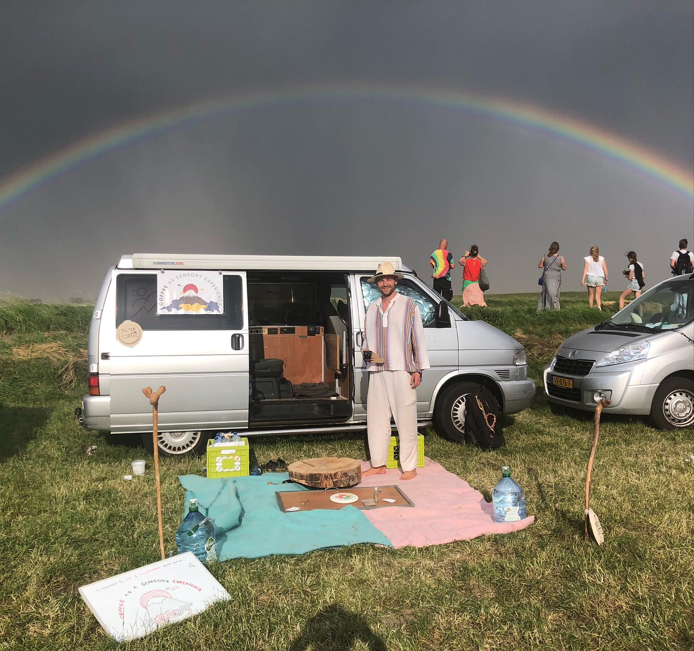

the friendly roast
the friendly roastAbout the roastery
A friendship, a modified home roaster, and a lot of curiosity.

Our story
-
2021
Kasper's roaster. My friend Kasper taught me to roast on his modified Gene Cafe CBR-101e — 250 grams at a time, one experiment after another. That's where the friendly roast was born.
-
2023
Going bigger. We got an Aillio Bullet and moved up to 1 kg batches. More coffee for friends — same obsession with every detail of the roast.
-
Today
Still curious. We keep roasting, tasting and tweaking — and sharing whatever turns out compelling.
"We roast coffee to see how the flavours transform — in each roast, each brew, each sip."
Our quest is to share compelling coffee with our friends. If that sounds like your kind of coffee, have a look at what we're roasting or get in touch.